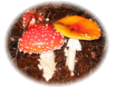

御座山
天気：☀️
メンバー：M,K,T
行程：白岩登山口 8:25 …うだ沢のトーミ 10:10 …御座山(2112m) 10:40〜12:35 …白岩登山口 14:10
Mさん、Kさんとの登山第2弾。予報では天気は芳しくなかったが（単独だったら行かなかったかも）、取り敢えず行ってみると案外もって結果オーライ。

5:30に大間々に集合。伊勢崎IC→佐久ICを経て、2時間半ほどで登山口につく。高原野菜畑の中を登り詰めた所が登山口という、ちょっと他にないアプローチの雰囲気だ。カラマツ林の緩い登りから尾根に上がり、暫くはほぼ平な道が続く。途中でベニテングタケを見た。
少しの急登で見晴らしの良いピークへ。このあたりはシャクナゲのトンネルになっているので、花の時期には見事かも。鞍部に下ると、木次原と下新井へ下る道の道標があるが、どちらへも道はほとんど消えている。ここから一登りで新しい避難小屋に着く。8月にできたばかりだそうだ。広くてさすがに綺麗。
このすぐ裏が頂上で岩稜になっている。西側が高度のある断崖でなかなかの迫力。遠くの展望はなかったが満足だ。往路を戻って、南相木温泉の滝見の湯（350円）に立ち寄って帰った。